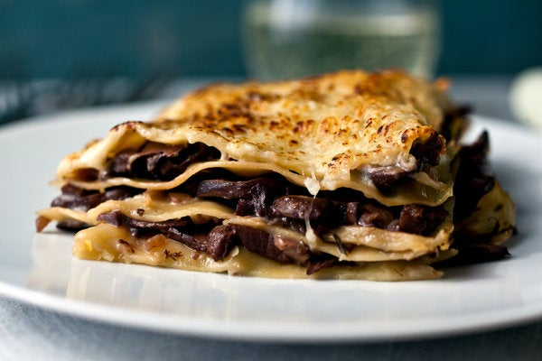

Mushroom Lasagna

Description
This lasagna tastes very rich, even though it really isn’t. It combines an olive oil béchamel with a simple mushroom ragout and Parmesan cheese. I prefer no-boil lasagna noodles because they’re lighter than regular lasagna noodles. But I still boil them because I think the results are better if they’re cooked until they’re flexible (a couple of minutes) first.
Ingredients
For the Mushrooms
- 1 ounce about 1 cup dried porcini or shiitake mushrooms
- 1 tablespoon extra virgin olive oil
- 2 shallots or 1 small onion, finely chopped
- 2 to 3 garlic cloves, minced
- pound cremini mushrooms, sliced
- Salt
- ½ cup fruity red wine, such as a Côtes du Rhône or Syrah
- 1 teaspoon fresh thyme leaves
- Freshly ground pepper
For the Béchamel
- 2 tablespoons extra virgin olive oil
- 2 tablespoons minced shallot or onion
- 2 tablespoons sifted all-purpose flour
- 2 cups milk (may use low-fat milk
- Salt
- Freshly ground black pepper
For the Lasagna
- ½ pound no-boil lasagna noodles
- 4 ounces Parmesan cheese, grated 1 cup
- A few leaves of fresh sage (optional)
Steps
- Place the dried mushrooms in a glass measuring cup and pour 2 cups boiling water over them. Let soak 30 minutes, while you prepare the other ingredients. Place a strainer over a bowl, line it with cheesecloth or paper towels, and drain the mushrooms. Squeeze the mushrooms over the strainer to extract all the flavorful juices. If using shiitakes, cut away and discard the stems. Then rinse the mushrooms, away from the bowl with the soaking liquid, until they are free of sand. Squeeze dry and set aside. Chop coarsely. Measure out 1½ cups of the soaking liquid and set aside.
- Heat 1 tablespoon olive oil in a large, heavy skillet over medium heat and add the shallots or onion. Cook, stirring often, until tender, 3 to 5 minutes. Add the garlic, stir together for about 30 seconds, then add the fresh and reconstituted mushrooms and salt to taste. Cook, stirring often, until the mushrooms begin to soften and to sweat, about 5 minutes. Add the wine and turn the heat to high. Cook, stirring, until the liquid boils down and glazes the mushrooms, 5 to 10 minutes. Add thyme and stir in the mushroom soaking liquid. Bring to a simmer, add salt, and cook over medium-high heat, stirring often, until the mushrooms are thoroughly tender and fragrant and the surrounding broth has reduced by a little more than half, about 10 to 15 minutes. Remove from the heat, stir in some freshly ground pepper, taste and adjust salt.
- Meanwhile, make the béchamel. Heat the oil over medium heat in a heavy saucepan. Add the shallot or onion and cook, stirring, until softened, about 3 minutes. Stir in the flour and cook, stirring, for about 3 minutes, until smooth and bubbling, but not browned. It should have the texture of wet sand. Whisk in the milk all at once and bring to a simmer, whisking all the while, until the mixture begins to thicken. Turn the heat to very low and simmer, stirring often with a whisk and scraping the bottom and edges of the pan with a rubber spatula, for 10 to 15 minutes, until the sauce is thick and has lost its raw-flour taste. Season with salt and pepper. Strain while hot into the pan with the mushrooms.
- Assemble the lasagna. Heat the oven to 350 degrees Fahrenheit. Oil or butter a 2-quart rectangular baking dish. Bring a large pot of water to a boil, salt generously and add 3 or 4 lasagna noodles, just the number you need for one layer. Cook only until flexible, and using tongs or a skimmer, remove from the pan and set on a kitchen towel to drain. Spoon a thin layer of béchamel and mushrooms over the bottom of the dish. Top with a layer of noodles. Spread a ladleful of the mushroom/béchamel mixture over the noodles and top with a layer of Parmesan. Cook the next layer of noodles and continue to repeat the layers (I get three layers in my pan), ending with a layer of the mushroom/béchamel mixture topped with Parmesan. Cover with foil and place in the oven. Bake 30 minutes. Remove the foil, and if you want the edges of the noodles crispy and the top lightly browned, continue to bake uncovered for another 5 to 10 minutes. Serve hot or warm.